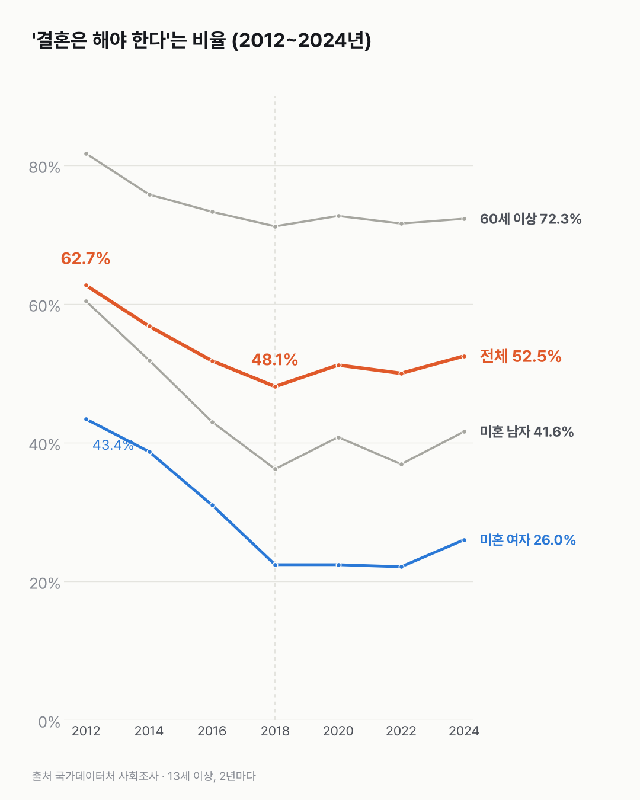
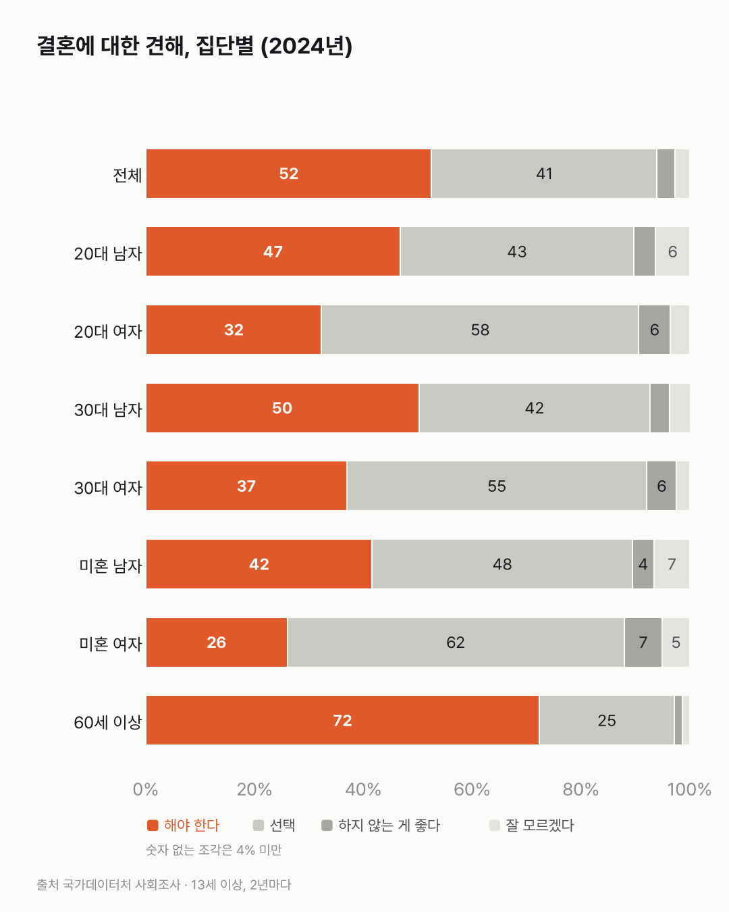

'결혼은 해야 한다'는 사람, 줄었다가 다시 절반을 넘었어요
미혼 여자에게 결혼은 '해도 되고 안 해도 되는 것'에 가까워요. 결혼을 말리는 쪽은 어느 집단에서도 8%를 넘지 않아요.

- '결혼은 해야 한다'는 13세 이상은 2012년 62.7%에서 2018년 48.1%로 줄었다가, 2024년엔 52.5%예요.
- 2024년 미혼 남자는 41.6%, 미혼 여자는 26.0%만 '해야 한다'고 답했어요.
- 미혼 여자의 61.9%는 '해도 좋고 하지 않아도 좋다'고 했어요. '하지 않는 게 좋다'는 7.0%예요.
60세 이상과 13~19세를 나란히 놓아 봤어요. '결혼은 해야 한다'는 답이 60세 이상은 72.3%, 13~19세는 33.7%로 두 배 넘게 차이 나요. 20대는 39.7%, 30대는 43.9%예요.
전체로는 2012년 62.7%에서 2018년 48.1%로 줄었다가 51.2%(2020), 50.0%(2022), 52.5%(2024)가 됐어요. '반드시 해야 한다'만 떼면 20.3%에서 11.1%로 줄었다가 16.4%예요.
미혼만 보면 숫자가 훨씬 낮아요. 2024년 미혼 여자는 26.0%, 미혼 남자는 41.6%예요. 2012년엔 각각 43.4%, 60.4%였어요. 미혼 여자는 2018~2022년 22%대에 머물렀어요. 그러다 2024년에 26.0%로 오른 걸 보고 한 번 더 확인하고 싶어졌어요.
대신 미혼 여자의 61.9%는 '해도 좋고 하지 않아도 좋다'고 답했어요. 미혼 남자는 47.8%예요.
같은 나이대끼리 비교해도 남자 쪽이 '해야 한다'가 많아요. 2024년 20대는 남자 46.8%, 여자 32.3%이고, 30대는 50.2%와 37.0%예요.
결혼을 아예 말리는 쪽은 드물어요. '하지 않는 게 좋다'는 미혼 여자 7.0%, 전체 3.3%예요.

2018년 이후 다시 오른 4%p 남짓이 어디서 왔는지는 이 표에 없어요. 생각이 바뀐 건지, 답하는 사람의 구성이 바뀐 건지 그게 궁금해졌어요.
이 숫자는 어디서 왔나요
출처
| 데이터 | 출처 | 쓰임 |
|---|---|---|
| 결혼에 대한 견해(13세 이상 인구) (KOSIS DT_1SSFA060R) | 국가데이터처 「사회조사」 | 6개 선택지 응답, 성·나이대·혼인상태별 |
- '해야 한다' = 반드시 해야 한다 + 하는 것이 좋다. '선택' = 해도 좋고 하지 않아도 좋다. '하지 않는 게 좋다' = 하지 않는 것이 좋다 + 하지 말아야 한다.
- 2010년까지는 15세 이상이라 13세 이상인 2012년부터 썼다. 2년마다 조사.
- 검증: 모든 칸에서 선택지 합이 100%(±0.2)인지 확인했다. 신뢰도 낮음(*) 표시 칸은 없었다.
- 교차 확인: 2024년 전체 52.5%(2년 전보다 2.5%p↑), 남자 58.3%·여자 46.8%, 미혼 남자 41.6%·미혼 여자 26.0%, 13~19세 33.7%·20대 39.7%·30대 43.9%·60세 이상 72.3%가 보도와 같다.
- 수집일: 2026-10-29 (KOSIS 오픈API).
기준일
2012~2024년 짝수 해 조사.
한계 4가지
이 데이터로 말할 수 없는 것
- 생각을 물은 것이다. 실제 결혼 건수나 결혼 의향(본인이 할 생각)과 다르다.
- 2018년 이후 반등의 이유는 이 표로 알 수 없다. 조사 방식 변화가 있었는지도 확인하지 못했다.
- '해야 한다'는 두 선택지를 묶은 것이다. 묶는 방식에 따라 숫자가 달라진다(반드시 해야 한다만은 16.4%).
- 결혼을 권하거나 말리는 글이 아니다. 좋고 나쁨을 판단하지 않는다.
전제 기록
데이터를 보기 전에 적어둔 것, 그리고 보고 나서 바꾼 것
- 전제 기록(premises)(데이터를 받기 전에 작성)를 따랐다. 받기 전에 '해야 한다' 묶는 방식을 정해 두었다.
질문
결혼은 선택이라는 말이 이제 낯설지 않아요. 그럼 '결혼은 해야 한다'고 생각하는 사람은 2012년부터 2024년까지 얼마나 줄었을까요? 나이대와 미혼 남녀로 나눠 봤어요.
새 글 나오면 받아 보기
지금은 RSS로 받을 수 있어요. 메일은 아직 준비 중이에요.